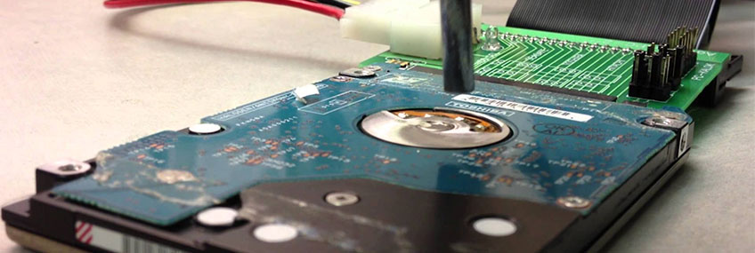

Dicas
Downloads


Cuidados ao baixar jogos e programas da internet

Não apenas jogos, mas a maioria dos programas a custo
Zero, vão cobrar de alguma forma os seus préstimos. Bom mas
então quais são as consequências disso:
a) Perigo Baixo:
Existem aqueles que instalam diversas barras de tarefas e
levam junto outros programas, cujas notificações de
instalação são encobertas. E quando você conclui a
instalação vai perceber que além do software desejado ele te
instalou por “baixo dos panos” um antivírus, uma ferramenta
de limpeza de sistema, um navegador de internet, etc. Bom
mas comparando com outros, podemos dizer que esses tipos de
downloads são fichinhas em termos de prejuízo para o seu
equipamento.
b) Perigo Médio:
Adware é um termo muito usado e que está na “boca do povo”.
Mas afinal, o que significa? Adware (vem do inglês, ad =
anuncio, software = programa) são programas que exibem
propagandas e anúncios sem a autorização do usuário,
tornando o computador mais lento e a conexão lenta.
Normalmente assumem o formato de pop-up, aquelas janelas
incômodas que abrem a todo instante enquanto você navega em
determinado site. Além disso, a sua conexão pode ser
prejudicada, pois estes programas precisam ser atualizados
constantemente por meio da Internet, isto sem falar no
incômodo causado pelas propagandas e anúncios que são
exibidos constantemente. A melhor medida de prevenção para
não “pegar” estas pragas é evitando navegar em sites
suspeitos ou fazer download de programas dos quais se
desconhece a procedência.
c) Perigo Médio/Alto:
Spywares são programas espiões, isto é, sua função é coletar
informações sobre uma ou mais atividades realizadas em um
computador. Entretanto, nem todos são prejudiciais. Por
exemplo: existem empresas de anúncio que se utilizam de
spywares para, de forma legal, coletar informações de seus
assinantes, com vistas a selecionar o tipo de anúncio que
irão lhes apresentar. Mas é claro, ninguém deseja ser
espionado.
d) Os altamente perigosos:
O Cavalo de Tróia ou Trojan Horse é um tipo programa
malicioso que podem entrar em um computador disfarçados como
um programa comum e legítimo. Ele serve para possibilitar a
abertura de uma porta de forma que usuários mal
intencionados possam invadir seu PC. O trojan serve de porta
de entrada para outros tipos de vírus perigosos como:
KEYLOGGER: Os keyloggers são softwares de computador
que visam monitorar, armazenar e enviar tudo o que foi
digitado pela vítima para um terceiro. Nos dias de hoje, os
keyloggers são inseridos em outros códigos prejudiciais como
os trojans, que têm o objetivo de acessar dados bancários.
BACKDOOR: É um mecanismo usado por vários malwares
para promover acesso remoto a softwares ou à rede infectada.
Esse programa busca explorar falhas problemáticas não
documentadas em aplicações instaladas, desatualizadas e do
firewall para ter acesso às portas do roteador. BROWSER
HIJACKER: Trata-se de um tipo de vírus de computador
que tem por meta a mudança das principais configurações do
navegador. Quando instalado, modifica a homepage e as formas
de busca. Demonstram anúncios em páginas legítimas e
redirecionam o usuário para sites maliciosos que podem
apresentar exploits ou outras pragas digitais. ROOTKIT:
Rootkit são trojans que usam mecanismos avançados de
programação para serem instalados em classes profundas ou
não documentadas do sistema operacional. As suas funções
mais devastadoras são: a sua capacidade de recuperação,
reinstalando-se mesmo depois da limpeza do computador; e sua
disseminação em alta velocidade. TIME BOMB: O Time
Bomb é um tipo de malware que apresenta contagem regressiva.
Ele é uma ameaça preordenada para ser executada em uma certa
ocasião no sistema operacional, provocando sérios danos. WORM:
Esse tipo de vírus de computador apresenta a função de se
autorreplicar sem a necessidade de infectar arquivos
legítimos, produzindo cópias funcionais de si mesmo. Tais
características fazem com que os worms se espalhem
rapidamente por redes de computadores e drives USB. Além
disso, eles podem ser repassados por mensagens de e-mail,
criando anexos problemáticos e os enviando para as listas de
contato da conta invadida. GREYWARE: É um malware
que se encontra na chamada zona cinzenta, entre o software
normal e um vírus, provocando mais irritação do que
problemas, como programas de piada e adware. Assim, o
Greyware refere-se a uma ampla gama de softwares que são
instalados sem a permissão do usuário. JOKE PROGRAM:
Tratam-se de mecanismos ou códigos criados para provocar
danos temporários ao sistema operacional, como travamentos e
alterações inesperadas de comportamento. Os códigos dessa
natureza não causam nenhum dano real ao computador. MACROS:
Os Macros são uma série de comandos coagidos que podem ser
configurados em programas como Word e Excel. Desse modo,
vários documentos com instruções prejudiciais podem ser
criados, atingindo outros dados ou executando planos
prejudiciais toda vez que eles forem realizados. Em sua
grande parte, a ação é feita ao abrir ou fechar um documento
dessa extensão. RANSOMWARE: São códigos maliciosos
que retêm arquivos ou todo o sistema do usuário por meio de
técnicas de criptografia. Após o “sequestro”, o malware
apresenta mensagens exigindo o depósito de uma certa quantia
ou a compra de alguma mercadoria, informando que em seguida
fará o envio da senha que libera os arquivos. Contudo, mesmo
depois do pagamento, o usuário não recebe senha alguma.
TROJAN BANKING: É o trojan caracterizado pelo acesso a dados
bancários, redes sociais, sites de compras e servidores de
e-mail. As formas utilizadas são as mesmas de um trojan
comum, sendo partilhado como um software ou arquivo
legítimo, em sites infectados ou e-mails.
O que faço pra me defender?
O mais importante é você ter um bom antivírus. Sugiro o
Karspesky que tem um ótimo custo benefício. Outras ações
seriam:
• Mantenha sempre um bom antivírus atualizado.
• Mantenha sempre um bom firewall ativado.
• Evite navegar em sites suspeitos ou fazer download de
programas dos quais se desconhece a procedência.
• Sempre leia as mensagens de alerta do navegador. Quando
for pedido alguma permissão que você nem sabe do que se
trata, clique sempre em bloquear (deny) e nunca em
permitir(alow).
• Instalar programas que varrem seu computador em busca de
ameaças e as elimina caso algo seja encontrado. Dentre os
principais programas estão: Spybot – Search & Destroy,
Ad-Aware 2008, Microsoft Windows Defender, AVG Anti-Spyware
Free e Spyware Terminator. Alguns antivírus possuem
ferramentas para remoção de adwares e spywares, mas a
maioria ainda não oferece esta praticidade. A maioria das
vezes o usuário não sabe que está infectado. Por esta razão
é sempre bom executar os programas e deixar que estes
monitorem seu computador para evitar danos maiores.
Infelizmente navegar na Internet não é 100% seguro, mas
sempre há como se precaver. Para procurar esses programas
abra o google e pesquise pelo nome, dê preferência pela
página do próprio fabricante do software.
Importante. Nem todos os programas
gratuitos (freeware) são nocivos,
existem programas bem conhecidos, gratuitos e indispensáveis
para o seu computador, eis alguns deles:
• Google Chrome Navegador
• Winrar, desfragmentador
• Java plugin.
• Leitor de pdf para versões anteriores ao Windows 10 (como o acrobat reader)
A NoteTech é experiente e tecnologicamente avançada nos serviços de recuperação de dados do em Belém e região metropolitana. Possuimos todos os recursos necessários para oferecer aos nossos clientes uma das maiores taxas de sucesso do setor de recuperação de dados. Com nossos técnicos experientes, equipe experiente e instalações de laboratório, temos tudo o que precisamos internamente para resolver suas necessidades de recuperação de dados com rapidez e eficiência
- Orçamento gratuito
- Rápido tempo de execução
- Pague somente se obtiver seus dados
- Técnicas aprimoradas de recuperação
- Serviços de emergência
- Com mais de 12 anos de experiência e especialização no tratamento de casos de recuperação, desde discos rígidos antigos de 200 MB até os mais recentes discos de 16 TB e vários drivers em servidores de até 250 TB.
- Fornecemos serviços de Recuperação de dados Serviços para discos rígidos para PC / Mac para computadores de mesa, discos rígidos para laptop, unidades SSD de estado sólido, externos e & Discos rígidos portáteis USB, disco rígido com criptografia ou SSDs, recuperação de servidor.
- Recuperação de qualquer tipo de formato de arquivo em tempo como Foto / Imagem, Recuperação de Vídeo, Recuperação de Áudio, Reparação de Arquivos & Extração de dados, CCTV / DVR ou formatos de arquivo com unidades criptografadas.
A NoteTech pode executar o serviço de recuperação que você precisa, normalmente a um custo menor que o oferecido pelaconcorrência local. Podemos recuperar dados, não importa como ocorra a perda - exclusão acidental, falha no hardware, dados corrompidos, danos causados por incêndio e água - para citar alguns. O Serviço de Recuperação de Dados da NoteTech acessa rapidamente a maneira mais eficiente e econômica de recuperar seus valiosos dados e arquivos.
Seus dados recuperados SEMPRE são mantidos em sigilo
Garantimos que, após os serviços de recuperação, todos os dados recuperados sejam mantidos em sigilo! Porque a nossa prioridade número um são os nossos clientes.
Nosso objetivo é fazer com que você volte as atividades no menor tempo possível, oferecendo um serviço excelente em todos os aspectos do processo de recuperação de dados.
Aqui estão alguns dos serviços mais comuns de recuperação de dados que fornecemos:
- Disco rígido com ruído
- Arquivo de Log excluído ou corrompido
- Falha mecânica no Disco Rígido
- Arquivos do sistema corrompidos
- Superfície do Disco Rígido corrompida
- Recuperação de Disco Rígido de notebook
- Perda acidental de dados ou arquivos excluídos
- Unidade de disco inacessível
- Formatação acidental do RAID
- Unidade sem nenhum arquivo(zerada)